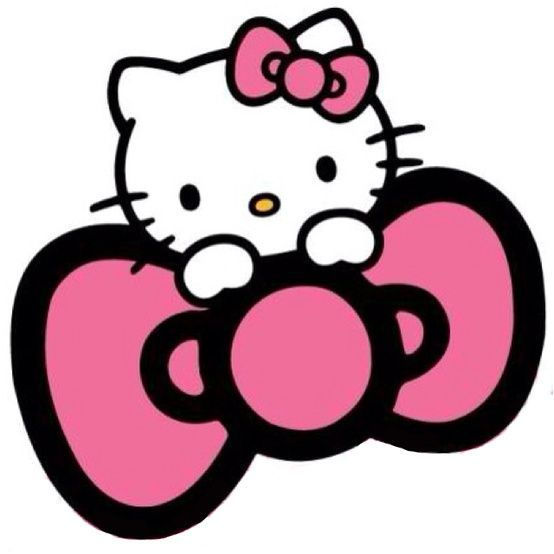

Hipervinculos externos
A una página de Internet
Google Página de comics y peliculas El periódico de MéxicoA una página de Internet en otra pestaña
NoticiasA una página de Internet en una imagen
A un archivo
Imagen de KittyHistoria de HK
Hipervinculos a correo
Mi correo
Hipervinculos internos
Menú
MisiónVisión
Escudo
Lema
Himno
Mascota
Porra
Instituto Politécnico Nacional
Misión Institucional
El Instituto Politécnico Nacional contribuye al desarrollo económico y social de la nación, a través de la formaci Integral de personas competentes; de la investigación, el desarrollo tecnológico y la innovación. Además reconocimiento internacional por su calidad e impacto social.
Visión
cientifico, tecnológico e innovación con impacto social en el pais. Institución educativa incluyente de prestigio internacional, que con su comunidad contribuye al desanoleEscudo
Fueron las inquietudes estudiantiles quienes tomaron la iniciativa para crear los símbolos que identificaran a la naciente institución politécnica. En los años 1944-1945 la Federación Nacional de Estudiantes Técnicos (FNET) lanzó una convocatoria para diseñar un escudo representativo de las escuelas que integraban el IPN. El primer luga fue otorgado al alumno Armando López Fonseca quien con ayuda de su compañero Jorge Grajales, legnaron que su diseño fuera el ganador. El escudo fue modificado en 1948 conservando sus clementos originales
Lema: "La Técnica al Servicio de la Patria"
El lema era utilizado por algunos estudiantes desde antes de la creación del IPN, pero fue durante el Primer Congreso Nacional de Estudiantes Técnicos, realizado en la ciudad de Chihuahua en 1937, donde el estudiante Jesús Robles propuso utilizar la frase La Técnica al Servicio de una Patria Mejor. Años más tarde este lema fse modificado por "La Técnica al Servicio de la Patria", el cual expresa los ideales del Politécnico.
Himno
Para obtener el Himno se convocó a un concurso abierto para su creación, pero no hubo eco al llamado. Luego de dos nuevas convocatorias, la poetisa Carmen de la Fuente resultó triunfadora del certamen y la Dirección General del Instituto le premió, el 15 de julio de 1961. Posteriormente, como la música aún no estaba elegida, se convoc a un certamen para poner música a la letra del himno del IPN, y resultó triunfador Armando González Dominguez. pianista reconocido y director de varias orquestas.
Mascota
mascota; la del Instituto Politécnico Nacional es un burro blanco. Se conocen por tradición oral diferentes versiones que al paso del tiempo se funden entre la realidad y el mito, el caso del Instituto Politécnico Nacional es de las más conocidas, la razón es muy particular. Se dice que al establecer los limites del terreno donde se construía el Instituto, Hacienda de Santo Tomás durante los años 30, quedó en estudiantes e integrantes del primer equipo de fútbol americano la tormaron como su mascuta. Con el paso de los años, la burra se convirtió en uno de los simbolos del Politécnico, fundamentalmente con el mode deportivo.
Porra
Uno de los deportes que creció junto con el Politécnico fue el fútbol americano. Desde sus inicios ha dejado profunda huella entre sus seguidores, quienes para apoyarlo han entonado diferentes porras: desde el chiquitibutn hasta el huélum; sin embargo, es éste el que ha permanecido vigente a través de un grito de fiesta para celebrar y cerrar todos los eventos. El 16 de marzo de 1985 el autor de la porra, Victor Chambon Burgoa, hizo el siguiente relato: En 1937, al saber que había hecho algunas canciones que cantábamos los jugadores de fútbol americano del IPN, se acercó a mi un grupo de muchachos y muchachas que estaban iniciando el primer núcleo de directores de la porra del Politécnico. Ahora bien, en el Poli, la palabra para reunir a los estudiantes era -¡huelga, huelga!-, Basada en esto, sugeri que se utilizara la palabra 'huélum'. Además, decidimos que no se utilizara la palabra 'rab, cal porque ya estaba en el 'Goya' y era una palabra porrística usada casi en todo Estados Unidos. Por otro lado, muchacha hizo el comentario que el Poli era la 'gloria'. Otra persona insistia que la porra debía ser de mucho pe y como consecuencia natural, brotó la 'cachiporra'. Total, después de un par de horas de pláticas y discusiones la que ustedes conocen". "
Cano Vaca Said Alexander